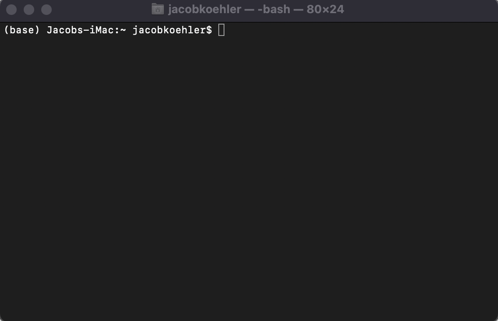

Installations and Introduction to your Terminal#
OBJECTIVES
Navigate files and directories using your terminal
Create, alter, and delete files using your terminal
Display basic information about files using bash commands
Use loops to execute programs from the terminal and store output
REQUIREMENTS
Jupyter notebooks and Jupyter Lab for use locally: Anaconda
VS Code Text Editor: VSCode
Terminal application with
gitinstalled. For windows users, the easiest approach is to download and install git for windows.
Using the Terminal#
In this exercise, our focus will be on using the terminal to navigate files and directories as well as to create and destroy files and directories.

Challenge#
Starting from /Users/nelle/data, which of the following commands could Nelle use to navigate to her home directory, which is /Users/nelle?
cd .cd /cd /home/nellecd ../..cd ~cd homecd ~/data/..cdcd ..
Using the filesystem diagram below, if
pwddisplays/Users/thing, what willls -F ../backupdisplay?
../backup: No such file or directory2012-12-01 2013-01-08 2013-01-272012-12-01/ 2013-01-08/ 2013-01-27/original/ pnas_final/ pnas_sub/
Using the filesystem diagram above, if
pwddisplays/Users/backup, and-rtells ls to display things in reverse order, what command(s) will result in the following output:
pnas_sub/ pnas_final/ original/
ls pwdls -r -Fls -r -F /Users/backup